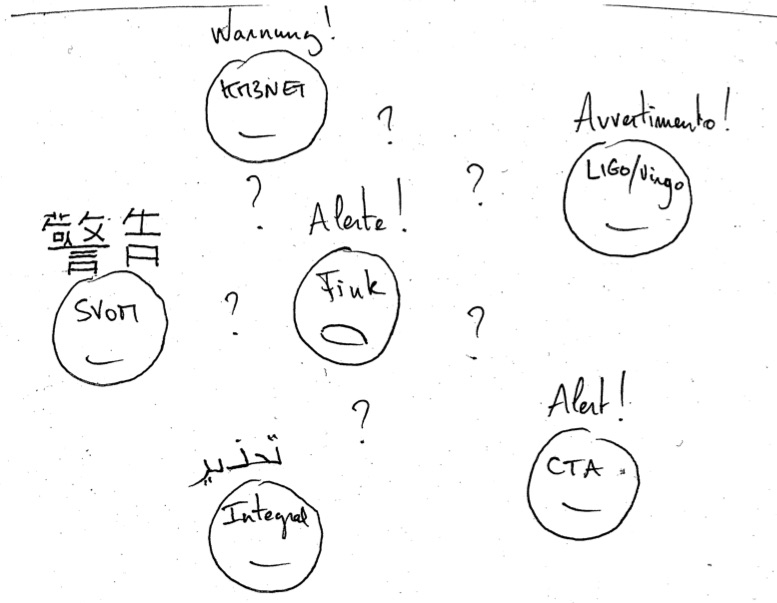

5. Fink and external alert streams¶

5.1. Est-ce que vous parlez français?¶
Each night the same events can be seen by several experiments. The combination of probes makes the work very exciting as the scientific potential of all these experiments will only be fully exploited when combined, as demonstrated by the event GW170817 where a follow-up of unprecedented magnitude, involving more than 70 space and ground based telescopes and thousands of people, took place to draw a full multi-messenger astronomy picture.
But life would be too simple if we would use all the same tools, data formats, and protocols to communicate. Despite some efforts to impose common practices (let thanks the Virtual Astronomical Observatory for example), the particularity of each experiment often (not always though) justifies the choice of different tools.
In the case of ZTF or LSST, the volume of alert data to be transferred makes traditional formats and tools like VOEvent and VOEvent Transport Protocol in a difficult position to work efficiently. Instead, both experiments chose to use tools with proven records in a big data context: Apache Avro (replace VOEvent), and Apache Kafka (replace VTP). This choice of tools makes sense in the point of view of ZTF and LSST, but it makes harder the integration of these experiments with the current eco-system of telescopes. One of the role of their brokers is to make sure this integration is still possible, by e.g.
- Listening to external VOevent-based stream (CTA, SVOM, KM3NET, LIGO/Virgo, …), and performing coincidences with the internal Avro-based stream (ZTF or LSST).
- Converting alerts of interest in the traditional VOevent format, and redistributing them using VTP.
While Fink tackled the first bullet (listening), the second one (redistributing) is still under development.
5.2. Plug-in external VOevent-based stream in Fink¶
In Fink, we use the Comet broker (open source implementation of VTP) to subscribe to streams and receive VOEvents sent by other telescopes. We have a handler that converts the format to Apache Parquet, suitable for a usage with Apache Spark (at the heart of Fink). The received alerts are converted into a live stream, and correlated with the Fink internal streams to compute for example coincidences.
Hence, to interface your alert data with Fink, the only things to do is to communicate the IP address on which you publish.